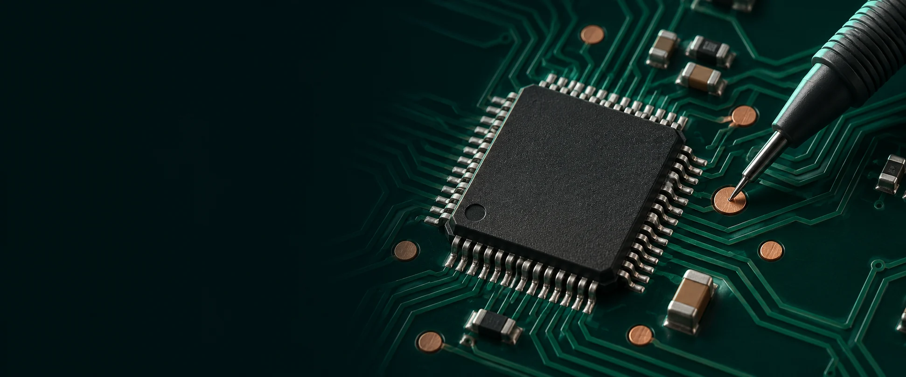
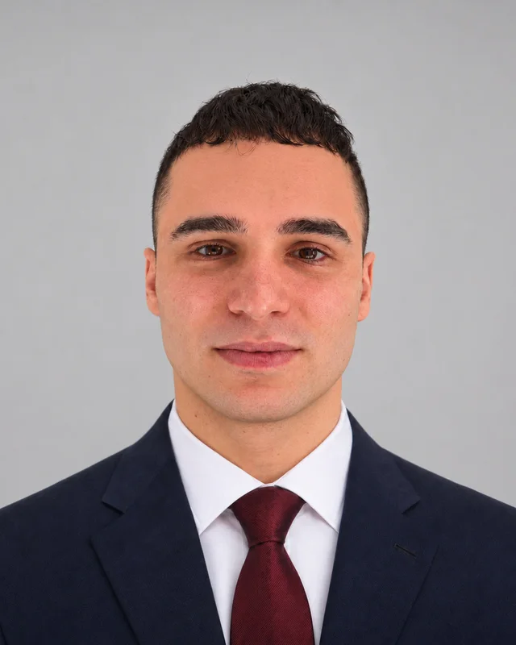

Devreler ve Ölçüm
Analog ve dijital devreleri simüle ediyor, laboratuvarda osiloskop ve sinyal jeneratörü ile devrelerin davranışını inceliyorum.
LTspice, Proteus, ölçüm cihazları


Yeni mezun pozisyonlarına açığım
Elektrik-Elektronik Mühendisliği
Karabük Üniversitesi son sınıf öğrencisiyim. Gömülü sistemler, devre tasarımı ve donanım testi üzerine çalışıyorum.
Karabük Üniversitesi’ndeki ders ve laboratuvar çalışmalarım üç alanda yoğunlaşıyor.
Analog ve dijital devreleri simüle ediyor, laboratuvarda osiloskop ve sinyal jeneratörü ile devrelerin davranışını inceliyorum.
LTspice, Proteus, ölçüm cihazları
Mikroişlemci mimarisi üzerine çalışıyor, C ve 8 bit assembly ile donanım seviyesinde kod yazıyorum. Mikrodenetleyiciler ve sensör arayüzleriyle ilgileniyorum.
C, C++, 8 bit assembly

Sinyal ve kontrol sistemlerini MATLAB ile modelliyorum. Elektrik makineleri dersinde enerji dönüşümünü ve motorların çalışma ilkelerini inceliyorum.
MATLAB, Python, matematiksel modelleme

Bir model seçin ve giriş değerini değiştirerek dalga biçimini inceleyin.

İki sinüzoidal gerilim, yatay ve düşey eksenleri ayrı ayrı belirler.
x = sin(3θ + φ), y = sin(2θ)
Parlak eğri seçilen fazı, daha soluk eğriler taramanın önceki 60°’lik bölümünü gösterir. Kaynak Tektronix.
1 kHz’lik temel sinyale tek sayılı harmonikler eklendikçe dalga kare biçimine yaklaşır.
v(t) ≈ (4/π) Σ sin(kωt)/k
Terim sayısı arttığında kenarlar keskinleşir. Sıçrama noktalarının yakınında küçük bir aşım kalır. Toplam k = 1, 3, …, 2N − 1 değerlerini kapsar. Kaynak MIT EECS.
1 V’luk basamak gerilimi, başlangıçta yüksüz olan kondansatörü 10 kΩ’luk direnç üzerinden şarj eder.
v(t) = V[1 − exp(−t/RC)]
Bir zaman sabiti (τ = RC) sonunda gerilim son değerinin yaklaşık %63,2’sine ulaşır. Kapasitans arttıkça kondansatör daha yavaş dolar. Kaynak MIT.
Yüzey alanı 20 cm² olan 100 sarımlı bir bobin, 0,1 T büyüklüğünde düzgün bir manyetik alanda döner.
ε = −N dΦ/dt
Her sarımdan geçen manyetik akı BA cos(ωt) ile değişir. Dönme hızı iki katına çıktığında hem frekans hem de açık devre geriliminin tepe değeri iki katına çıkar. Kaynak MIT OpenCourseWare.

Elektrik-Elektronik Mühendisliği
Eğitim dili %100 İngilizce olan lisans programında son sınıf öğrencisiyim. Analog ve dijital elektronik, mikroişlemciler, sinyal işleme, kontrol sistemleri ve elektrik makineleri üzerine dersler aldım.
Uludoğan Savunma Sanayii Teknoloji Şirketi ve Karabük Üniversitesi Savunma Teknolojileri Kulübü (KARSAV) iş birliğiyle düzenlenen eğitim programının sonundaki sınavı geçerek sertifika aldım.
Gömülü sistemler, elektronik tasarım ve donanım testi alanlarındaki iş fırsatları için bana e-posta ile ulaşabilirsiniz. Özellikle savunma elektroniğiyle ilgileniyorum.
Referanslar talep üzerine paylaşılabilir.